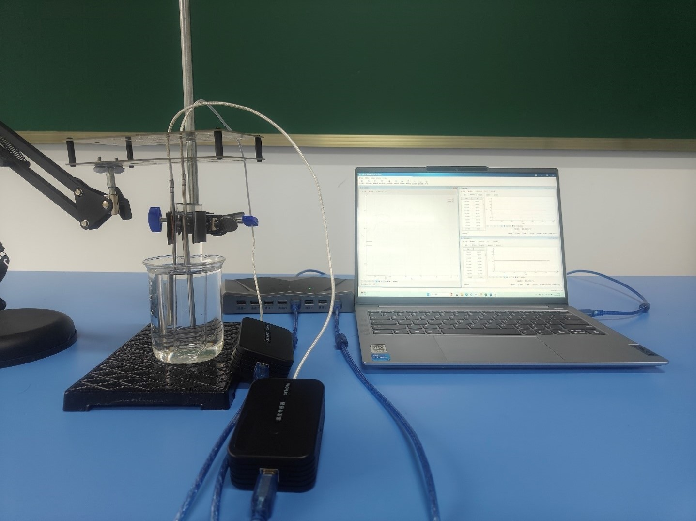
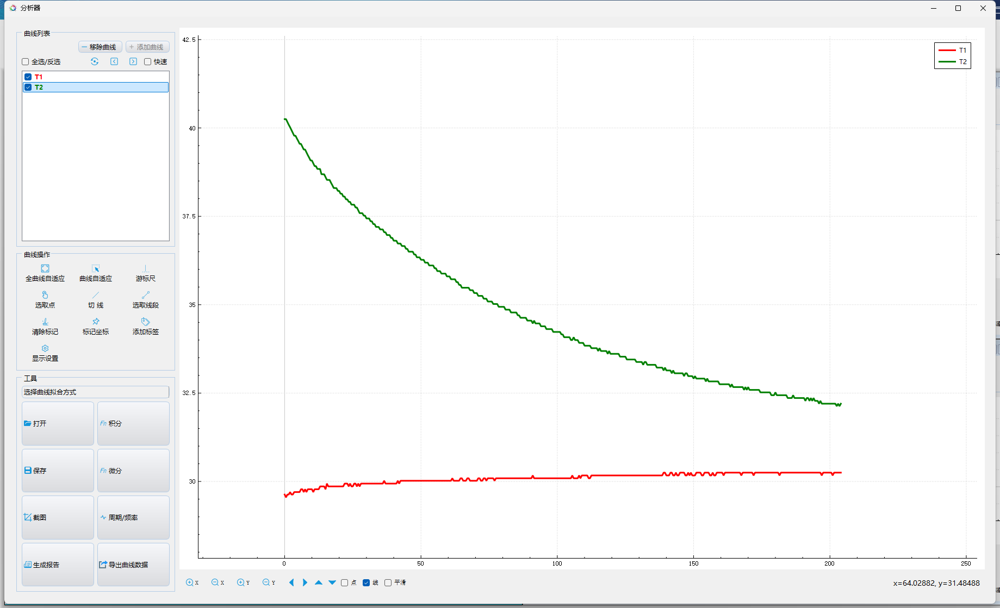

实验八 研究水的冷却规律
【实验目的】
探究水的冷却规律。
【实验原理】
牛顿冷却定律：当物体表面与周围存在温度差时，单位时间从单位面积散失的热量与温度差成正比。即当物体温度高于周围环境时，物体与周围环境的温度差越大，降温速度越快；当温度差逐渐变小时，降温速度越来越慢。
【实验器材】
数据采集器、两个温度传感器、烧杯、试管、铁架台、试管夹、多功能支架等。
【实验装置】

【实验操作步骤】
按图搭建好实验环境
用铁架台固定住试管，并使试管伸入烧杯中
将两个温度传感器分别插入试管与烧杯中，注意要悬空不要接触到试管或烧杯壁。
将两个温度传感器连接电脑，打开实验数据分析软件，打开多曲线视图并点击开始采集。
往试管中加入沸水，往烧杯中加入常温水。
观察软件中两个温度传感器的温度变化，获得足够的数据后，点击暂停和数据分析得出实验结论。
